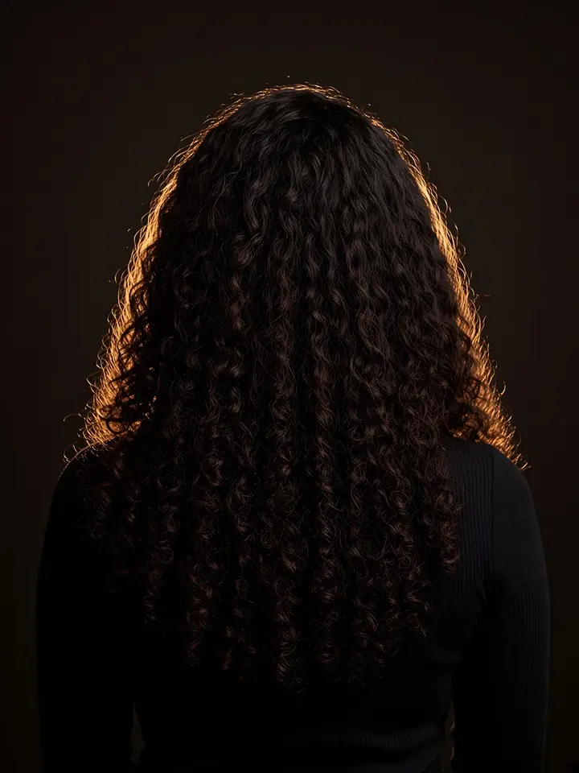
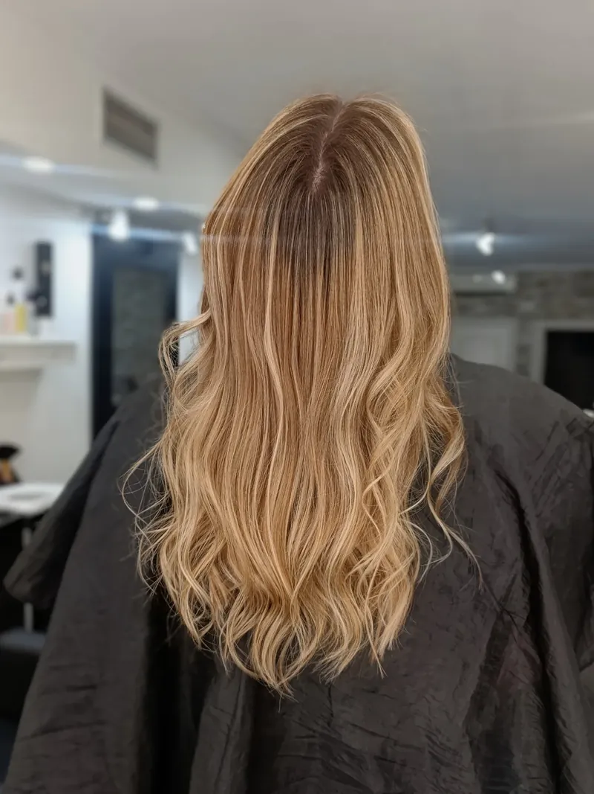
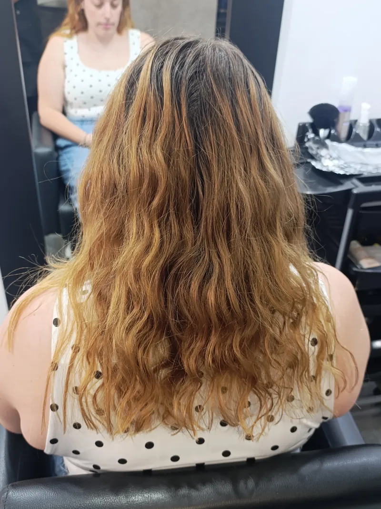

Tokens
Cores
A proporção é 60-30-10: preto de base, ameixa de respiro, dourado só no detalhe. O contraste ao lado foi medido pela fórmula WCAG 2.
| Cor | Token | Hex | Papel | Contraste medido |
|---|---|---|---|---|
--preto | #15100D | fundo principal (60) | — | |
--ameixa | #2E1426 | fundo de respiro (30), roxo refeito na v5; antes era #2A1030 | — | |
--tinta | #F3EBE1 | texto principal sobre escuro | 15.99:1 sobre preto · 14.29:1 sobre ameixa | |
--tinta-2 | #CBC4BB | texto secundário sobre escuro | 10.93:1 sobre preto · 9.77:1 sobre ameixa | |
--apagado | #958898 | palavra ainda não lida (efeito de leitura) | 5.62:1 sobre preto · 5.03:1 sobre ameixa | |
--ouro | #B8925A | fio, detalhe, ícone (10) | 6.56:1 sobre preto · 5.86:1 sobre ameixa | |
--ouro-claro | #D9B77E | link, acento, borda de botão | 9.92:1 sobre preto · 8.86:1 sobre ameixa | |
--roxo-borda | #A57BB4 | anel de foco do teclado | 5.48:1 sobre preto · 4.90:1 sobre ameixa | |
--creme | #FBF8F4 | botão claro, fundo claro | — | |
--roxo | #4B1E5A | título sobre creme | 12.15:1 sobre creme | |
--grafite | #1F1A22 | texto sobre creme | 16.14:1 sobre creme | |
--cinza | #6B6270 | texto secundário sobre creme | 5.50:1 sobre creme |
A única mudança de paleta
Roxo refeito
O #2A1030 puxava para o violeta frio. Na passagem com o preto quente ficava acinzentado, e no rodapé virava uma faixa. O novo #2E1426 é um ameixa-vinho, mais quente e da mesma família do preto. A passagem entre os dois é feita em OKLab, sem meio-tom sujo.
v4c: preto → #2A1030
v5: preto → #2E1426 (OKLab)
Contraste no pior ponto da transição
Medi 101 passos entre preto e ameixa e anotei aqui o menor valor de cada cor. Assim o AA vale o tempo todo, no meio da rolagem também.
| Cor | Uso | Mínimo AA | Pior ponto medido | |
|---|---|---|---|---|
--tinta | texto | 4.5:1 | 14.29:1 | AA ✓ |
--tinta-2 | texto | 4.5:1 | 9.77:1 | AA ✓ |
--ouro-claro | link/acento | 4.5:1 | 8.86:1 | AA ✓ |
--apagado | texto (palavra não lida) | 4.5:1 | 5.03:1 | AA ✓ |
--ouro | fio e ícone (gráfico) | 3:1 | 5.86:1 | AA ✓ |
--roxo-borda | anel de foco (gráfico) | 3:1 | 4.90:1 | AA ✓ |
Fontes aprovadas, sem troca
Tipografia
Gloock: só o nome e os chamados grandes
Juliana Oliveira
DM Serif Display: títulos
Lo que hago por tu pelo
Plus Jakarta Sans: texto, botão, rótulo
Un corte pensado para tu tipo de pelo y para cómo te peinas cada día.
Peluquera en Alicante
Medidas
Toque, raio e movimento
--tap | 48px | Área mínima de toque de qualquer link ou botão. |
--btn | 52px | Altura dos botões de ação. |
--raio | 20px | Cards, fotos e antes/depois. |
--canto | 24px | Topo do rodapé. |
| Movimento | reduce | Com «reduzir movimento» ligado não há parallax nem entrada animada. A cor de fundo muda sem animação. |
Ícones de destaque
São de traço fino dourado sobre ameixa, todos no mesmo peso e sem emoji. As capas em PNG 1080×1920 (ícone no centro, pronto para o corte redondo) ficam no painel, em painel/03-site-e-curso/v5/destaques/.
- Cortes
- Color
- Mechas
- Alisado
- Rizos
- Antes y después
- Sobre mí
- Dónde
- Citas
Componentes
Peças do site
Botões
Filtros
Card de serviço
Color
Color de raíz o cambio completo, según lo que buscas y cómo está tu pelo.
Pedir cita para color →Pergunta frequente
¿Cuánto cuesta?
Depende de tu pelo y del servicio. Escríbeme por WhatsApp y te doy un presupuesto antes de la cita.
¿Hablas portugués?
Sí. Atiendo en español y también en portugués.
Foto + legenda curta
Princípio tirado da referência de salão: mostrar o processo com uma legenda curta por foto.

Etiqueta de versão
Fica fixa em cada versão congelada: no topo à direita no celular (longe do botão de WhatsApp) e embaixo à esquerda no computador.
Componente
Antes e depois com divisória arrastável
Pode arrastar a divisória com o dedo ou o mouse, ou tocar em qualquer ponto da foto. No teclado: Tab chega nela, ← → movem 5%, Shift move 10% e Home/End vão às pontas. O leitor de tela anuncia, por exemplo, «50 % antes, 50 % después». O gesto na vertical continua rolando a página.


Conversão
CTA de WhatsApp
O número é provisório (+55 12 97406-3847, para teste). Todos os links vêm de uma linha só, WA= em comum.py: para trocar o número, basta trocar essa linha e gerar de novo.
¿Hablamos de tu pelo?
Cuéntame qué te quieres hacer y buscamos un hueco. Te contesto yo.
Pide cita por WhatsApp